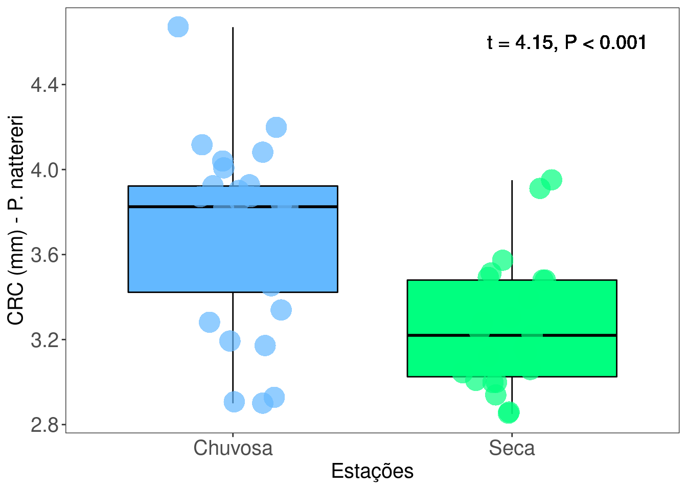

Capítulo 12 Diversidade Taxonômica
A diversidade biológica é um conceito mutifacetado que pode ser definido e analisado de diferentes maneiras (e.g. diversidade genética, taxonômica, funcional, filogenética, ecossistêmica, etc; vejam Magurran & McGill 2011; Gotelli & Chao 2013). Whittaker (1962) particionou a diversidade em três componentes: i) diversidade alfa (𝛂) que é caracterizada pela diversidade dentro do habitat ou unidade amostral; ii) diversidade beta (𝛃) que é caracterizada pela variação na composição de espécies entre habitats ou unidades amostrais; e iii) diversidade gama (𝛄) que é caracterizada pela combinação da diversidade 𝛂 e 𝛃 ou definada como a diversidade regional englobando todos os habitats ou unidades amostrais. Portanto, não existe um método que quantifique todos os parâmetros associados à diversidade biológica. Consequentemente, a escolha da métrica de diversidade dependerá i) do objetivo do estudo; e ii) das informações disponíveis para o pesquisador.
Neste capítulo iremos aborda a diversidade taxonômica que ignora a relação de parentesco entre as espécies (e.g. filogenia em estrela) e as diferentes funções que as espécies realizam no ecossistema. Na diversidade taxonômica, pesquisadores estão interessados na riqueza de espécies (e.g. número de espécies), na distribuição de abundância das espécies (e.g. fato que algumas espécies são comuns e outras raras) e/ou diversidade de espécies (e.g. índices que descrevem a relação entre a riqueza e a distribuição da abundância relativa das espécies) nas localidades.
12.1 Diversidade alfa (𝛂)
12.2 Riqueza de espécies ou número de espécies
Riqueza de espécies é uma métrica intuitiva e de fácil compreensão uma vez que se refere ao número de espécies observadas em uma localidade. É importante ter em mente que os valores de riqueza de espécies são influênciados pelo esforço amostral e sua estimativa real é um imenso desafio (Magurran & MacGill 2011) . Comparações entre comunidades com diferenças no número de amostragens ou abudância das espécies devem ser realizadas por meio de rarefações (veja capítulo 10) enquanto que o número de espécies não detectadas pode ser estimado pelos estimadores de riqueza (veja capítulo 11). Embora raramente usados, como alternativa a rarefação, existem alguns índices que calculam a riqueza de espécies considerando a abundância total (i.e. tamanho da amostra) dentro de cada comunidade. Esses índices são:
Índice de Margalef
\[D_{Mg} = \frac{S-1}{ln (N)}\]
onde:
S = o número de espécies na comunidade,
ln = logarítimo natural,
N = número total de indivíduos na comunidade.
e
Índice de Menhinick
\[D_{Mn} = \frac{S}{\sqrt{N}}\]
onde:
S = o número de espécies na comunidade,
N = número total de indivíduos na comunidade.
12.2.0.1 Exemplo prático 1 - Riqueza de espécies
Explicação dos dados
Neste exemplo avaliaremos a riqueza de espécies de 10 comunidades. Os dados de ocorrência das espécies nas comunidades foram simulados para demonstrar as propriedades das métricas de diversidade taxonômicas. Utilizaremos este conjunto de dados para todos os exemplos deste capítulo.
Pergunta:
A distribuição dos valores de riqueza de espécies das comunidades está associado com o gradiente de precipitação?
Predições
Os valores de riqueza de espécies serão maiores nas comunidades localizadas em regiões com altas precipitações do que em regiões mais secas.
Variáveis
Variáveis preditoras
- Dataframe com as comunidades (unidade amostral) nas linhas e as espécies nas colunas.
- Dataframe com as comunidades (unidade amostral) nas linhas e a variável precipitação anual na coluna
Checklist
Verificar se os dataframes de composição de espécies e variáveis ambientais estão com as unidades amostrais nas linhas e variáveis preditores nas colunas
Verificar se as comunidades nos dataframes de composição de espécies e variáveis ambientais estão distruídos na mesma sequencia/ordem nos dois arquivos.
Abaixo demonstramos os comandos no R para determinar a riqueza de espécies para cada comunidade a partir da planilha de composição de espécies.
# Carregando o dataframe com a composição de espécies.
library(ecodados)
composicao_especies <- read.csv2("composicao_anuros_div_taxonomica.csv", row.names = 1)
head(composicao_especies)## sp1 sp2 sp3 sp4 sp5 sp6 sp7 sp8 sp9 sp10
## Com_1 10 10 10 10 10 10 10 10 10 10
## Com_2 91 1 1 1 1 1 1 1 1 1
## Com_3 1 3 6 25 1 0 0 0 0 0
## Com_4 0 0 0 0 0 15 15 18 17 16
## Com_5 0 9 0 6 0 11 0 2 12 0
## Com_6 3 0 5 0 12 1 0 13 12 0# Calculando a riqueza de espécies para cada comunidade
library (vegan)
(riqueza_sp <- specnumber(composicao_especies))## Com_1 Com_2 Com_3 Com_4 Com_5 Com_6 Com_7 Com_8 Com_9 Com_10
## 10 10 5 5 5 6 2 4 6 4# Calculando índice de Margalef para cada comunidade. Primeiro, calculamos a abudância total para cada comunidade. Em seguida, aplicamos a fórmula para o cálculo do índice de Margalef
abundancia <- apply(composicao_especies, 1, sum)
(Margalef <- round((riqueza_sp-1)/log(abundancia), 2))## Com_1 Com_2 Com_3 Com_4 Com_5 Com_6 Com_7 Com_8 Com_9 Com_10
## 1.95 1.95 1.12 0.91 1.08 1.31 0.72 1.00 1.85 1.25# Calculando índice de Menhinick para cada comunidade
(Menhinick <- round(riqueza_sp/sqrt(abundancia), 2))## Com_1 Com_2 Com_3 Com_4 Com_5 Com_6 Com_7 Com_8 Com_9 Com_10
## 1.00 1.00 0.83 0.56 0.79 0.88 1.00 0.89 1.55 1.21# Analisar a relação entre a riqueza de espécies e os índices de Margalef e Menhinick com a precipitação anual.
# Arquivo com dados de precipitação para cada comunidade
precipitacao <- read.csv2("precipitacao_div_taxonomica.csv", row.names = 1)
# Juntando todos os dados em um único dataframe
dados <- data.frame(precipitacao$prec, riqueza_sp, Margalef, Menhinick)
colnames(dados) <- c("Precipitacao", "Riqueza", "Margalef", "Menhinick")
dados## Precipitacao Riqueza Margalef Menhinick
## Com_1 3200 10 1.95 1.00
## Com_2 3112 10 1.95 1.00
## Com_3 2800 5 1.12 0.83
## Com_4 1800 5 0.91 0.56
## Com_5 2906 5 1.08 0.79
## Com_6 3005 6 1.31 0.88
## Com_7 930 2 0.72 1.00
## Com_8 1000 4 1.00 0.89
## Com_9 1300 6 1.85 1.55
## Com_10 987 4 1.25 1.21# Regressão simples para verificar a relação entre os índices de riqueza de espécies e a precipitação anual nas comunidades
anova(lm(dados$Riqueza ~ dados$Precipitacao))## Analysis of Variance Table
##
## Response: dados$Riqueza
## Df Sum Sq Mean Sq F value Pr(>F)
## dados$Precipitacao 1 30.622 30.6224 8.9156 0.01744 *
## Residuals 8 27.478 3.4347
## ---
## Signif. codes: 0 '***' 0.001 '**' 0.01 '*' 0.05 '.' 0.1 ' ' 1anova(lm(dados$Margalef ~ dados$Precipitacao))## Analysis of Variance Table
##
## Response: dados$Margalef
## Df Sum Sq Mean Sq F value Pr(>F)
## dados$Precipitacao 1 0.37865 0.37865 2.1201 0.1835
## Residuals 8 1.42879 0.17860anova(lm(dados$Menhinick ~ dados$Precipitacao))## Analysis of Variance Table
##
## Response: dados$Menhinick
## Df Sum Sq Mean Sq F value Pr(>F)
## dados$Precipitacao 1 0.07626 0.076262 1.0992 0.3251
## Residuals 8 0.55503 0.069378Interpretação dos resultados
Há uma relação positiva entre a riqueza de espécies e a precipitação anual, mas essa relação não foi observada para os índices de riqueza. Vamos plotar o gráfico com os resultados da riqueza de espécies ao longo do gradiente de precipitação anual.
library(ggplot2)
ggplot(data = dados, aes(x= Precipitacao, y= Riqueza)) +
labs(x = "Precipitação anual (mm)", y = "Riqueza de espécies",
size = 15) +
geom_point(size = 15, shape = 21, fill = "gray") +
geom_text(x = 1600, y = 9, label = "R2 = 0.46, P = 0.01",
color = "black", size = 7) +
theme_bw() +
theme(axis.title.y = element_text(size = 15),
axis.title.x = element_text(size = 15)) +
theme(axis.text.y = element_text(size = 15),
axis.text.x = element_text(size = 15)) +
theme(panel.grid.major = element_blank(),
panel.grid.minor = element_blank(),
panel.border = element_rect(colour = "black",
fill=NA, size = 2)) +
geom_smooth(method = lm, se = FALSE, color = "black") 
12.3 Diversidade de espécies
Diferente dos índices de riqueza de espécies que não levam em consideração a abundância relativa das espécies (i.e. todas as espécies tem o mesmo peso), os índices de diversidade avaliam além da riqueza, a dominância ou raridade das espécies nas comunidades. Assim, quando comparamos duas comunidades com a mesma riqueza de espécies, e uma das comunidades é dominada por uma única espécie e a outra comunidade apresenta espécies com abundâncias parecidas, consideramos a segunda comunidade mais diversa. Os índices de diversidade variam porque eles dão pesos diferentes para a riqueza e equitabilidade das espécies. Assim, um determinado índice de diversidade pode indicar que uma comunidade X é mais diversa que Y, enquanto outro índice indica o oposto (Melo 2008). Portanto, uma maneira para determinar qual índice de diversidade usar é saber se você quer dar maior peso para riqueza ou equitabilidade das espécies nas comunidades. Por fim, ressaltamos que há várias críticas em relação ao uso dos índices de diversidade que são abstratos e difíceis de se interpretar (e.g. Hurlbert 1971). Por exemplo, dizer que o valor X estimado por índices de diversidade é alto ou baixo é irrelevante se não tivermos uma base comparativa (para mais detalhes veja Melo 2008).
Os dois índices de diversidade mais usados na ecologia são:
Índice de Shannon-Wiener - quantifica a incerteza associada em predizer a identidade de uma espécie dado o número de espécies e a distribuição de abundância para cada espécie. Este índice é mais sensível a mudanças nas espécies raras da comunidade.
\[H' = -\sum_{i=1}^{S}p_i * ln p_i\]
onde:
pi = abundância relativa de cada espécie, calculada pela proporção dos indivíduos de uma espécie pelo número total dos indivíduos na comunidade;
ln = logarítimo natural, mas outras bases logarítimas podem ser utilizadas.
e
Índice de Simpson - quantifica a probabilidade de dois indivíduos retirados ao acaso da comunidade pertencerem a mesma espécies. Este índice é na verdade uma medida de dominância. Assim, como a probabilidade dos indivíduos serem da mesma espécie diminui com o aumento da riqueza de espécies, o índice de Simpson também diminui com a riqueza.
\[D = \sum_{i=1}^{S}p_i^2\]
onde:
Pi = abundância relativa de cada espécie, calculada pela proporção dos indivíduos de uma espécie pelo número total dos indivíduos na comunidade.
D varia de 0 a 1 com valores próximos de 1 indicando menor diversidade enquanto valores próximos de 0 indicam maior diversidade. Para evitar confusão nas interpretações, normalmente o índice de Simpson é expressado como o valor inverso (1 - D) para que os maiores valores representem maior diversidade. Neste caso, o valor inverso é conhecido na literatura como índice Gini-Simpson. Para o índice Gini-Simpson estamos avaliando a probabilidade de dois indivíduos retirados ao acaso da comunidade sejam de espécies diferentes.
12.3.0.1 Exemplo prático 2 - Diversidade de espécies
Explicação dos dados
Usaremos os mesmos dados simulados do exemplo prático 1.
Pergunta:
A distribuição dos valores de diversidade de espécies das comunidades está associado com o gradiente de precipitação?
Predições
Os valores de diversidade de espécies serão maiores nas comunidades localizadas em regiões com altas precipitações do que em regiões mais secas.
Abaixo demonstramos os comandos no R para determinar a diversidade de espécies para cada comunidade a partir da planilha de composição de espécies.
# Carregando o dataframe com a composição de espécies.
library(ecodados)
composicao_especies <- read.csv2("composicao_anuros_div_taxonomica.csv", row.names = 1)
head(composicao_especies)## sp1 sp2 sp3 sp4 sp5 sp6 sp7 sp8 sp9 sp10
## Com_1 10 10 10 10 10 10 10 10 10 10
## Com_2 91 1 1 1 1 1 1 1 1 1
## Com_3 1 3 6 25 1 0 0 0 0 0
## Com_4 0 0 0 0 0 15 15 18 17 16
## Com_5 0 9 0 6 0 11 0 2 12 0
## Com_6 3 0 5 0 12 1 0 13 12 0# Calculando a diversidade de espécies para cada comunidade. A opção index = "simpson" calcula o índice Gini-Simpson (1-D).
library (vegan)
shannon_res <- diversity(composicao_especies,
index = "shannon", MARGIN = 1)
simpson_res <- diversity(composicao_especies,
index = "simpson", MARGIN = 1) Interpretação dos resultados
A comunidade 1 foi a comunidade que apresentou a maior diversidade de espécies enquanto a comunidade 2 foi a comunidade que apresentou a menor diversidade. Gostaríamos de chamar a atenção para a importância da distribuição da abundância relativa das espécies dentro das comunidades. Percebam que tanto a comunidade 1 quanto a comunidade 2 abrigam o mesmo número de espécies (10 espécies) e abundância total (100 indivíduos), mas o padrão de distribuição da abundância relativa entre as espécies dentro das comunidades são bem discrepantes. Na comunidade 1 as espécies apresentam abundâncias semelhantes entre elas (i.e. alta equitabilidade) enquanto que na comunidade 2 uma espécie é dominante e as outras raras (i.e. baixa equitabilidade). Essa diferença na distribuição da abundância relativa entre as comunidades é um fator muito importante para os índices de diversidade. Dentro desta perspectiva, alguns índices fornecem uma estimativa sobre a equitabilidade da distribuição da abundância nas comunidades. Entre eles, o mais conhecido foi proposto por Pielou (1966):
Índice de Equabilidade (ou Equitabilidade) de Pielou é uma métrica derivada do índice de Shannon-Wiener que descreve o padrão de abundância relativa das espécies na comunidade.
\[J = \frac{H'}{Hmax} = \frac{H'}{ln (S)}\]
onde:
- H’ = índice de Shannon-Wiener
- Hmax = todas as espécies teriam a mesma abundância relativa. Hmax é calculado aplicando o logarítmo natural (ln) para a riqueza de espécies (S).
- Se todas as espécies apresentam a mesma abundância relativa, então J = 1. Se uma espécie apresenta forte dominância, J aproxima-se de zero.
# Não há uma função no R que calcule o índice de Pielou, mas ele pode facilmente ser calculado usando os valores de diversidade de Shannon e o logarítimo da riqueza de espécies de cada comunidade
(Pielou <- shannon_res/log(specnumber(composicao_especies)))## Com_1 Com_2 Com_3 Com_4 Com_5 Com_6 Com_7 Com_8
## 1.0000000 0.2172723 0.5952456 0.9984019 0.9234214 0.8710454 1.0000000 0.7977309
## Com_9 Com_10
## 0.9566505 0.9115340Agora que temos uma ideia de como a riqueza de espécies e a distribuição da abundância relativa são importantes para quantificar os valores dos índices de diversidade, vamos testar se há relação entre os índices de diversidade e precipitação anual nas comunidades.
# Arquivo com dados de precipitação para cada comunidade
precipitacao <- read.csv2("precipitacao_div_taxonomica.csv", row.names = 1)
# Juntando todos os dados em um único dataframe
dados_div <- data.frame(precipitacao$prec, shannon_res,
simpson_res, Pielou)
colnames(dados_div) <- c("Precipitacao", "Shannon",
"Simpson", "Pielou")
dados_div ## Precipitacao Shannon Simpson Pielou
## Com_1 3200 2.3025851 0.9000000 1.0000000
## Com_2 3112 0.5002880 0.1710000 0.2172723
## Com_3 2800 0.9580109 0.4814815 0.5952456
## Com_4 1800 1.6068659 0.7989636 0.9984019
## Com_5 2906 1.4861894 0.7587500 0.9234214
## Com_6 3005 1.5607038 0.7674858 0.8710454
## Com_7 930 0.6931472 0.5000000 1.0000000
## Com_8 1000 1.1058899 0.5850000 0.7977309
## Com_9 1300 1.7140875 0.8088889 0.9566505
## Com_10 987 1.2636544 0.6942149 0.9115340# Regressão simples
anova(lm(dados_div$Shannon ~ dados_div$Precipitacao))## Analysis of Variance Table
##
## Response: dados_div$Shannon
## Df Sum Sq Mean Sq F value Pr(>F)
## dados_div$Precipitacao 1 0.10989 0.10989 0.3627 0.5637
## Residuals 8 2.42366 0.30296anova(lm(dados_div$Simpson ~ dados_div$Precipitacao))## Analysis of Variance Table
##
## Response: dados_div$Simpson
## Df Sum Sq Mean Sq F value Pr(>F)
## dados_div$Precipitacao 1 0.00132 0.001325 0.0252 0.8778
## Residuals 8 0.42064 0.052580anova(lm(dados_div$Pielou ~ dados_div$Precipitacao))## Analysis of Variance Table
##
## Response: dados_div$Pielou
## Df Sum Sq Mean Sq F value Pr(>F)
## dados_div$Precipitacao 1 0.09080 0.090798 1.5792 0.2443
## Residuals 8 0.45997 0.057496Interpretação dos resultados
A distribuição da diversidade de espécies não está associada com o gradiente de precipitação anual.
12.4 Diagramas de Whittaker ou Curva de Dominância
Embora os índices de diversidade de espécies englobem os componentes riqueza e abundância relativa das espécies nas suas estimativas, não é possível conhecer o número de espécies ou quais são as espécies dominantes ou raras dentro das comunidades. Por exemplo, duas comunidades podem ter o mesmo valor de diversidade e ainda assim apresentarem diferenças na riqueza e equitabilidade (Melo 2008). O diagrama de Whittaker é um método que lida com essas questões utilizando informações visuais do número de espécies e abundância relativa de cada espécie nas comunidades. Este método plota as espécies ranqueadas no eixo X da mais abundante para a menos abundante enquanto que no eixo Y as abundâncias das espécies são plotadas em escala logarítima (log10). Este gráfico permite ao leitor reconhecer: i) a riqueza de espécies observando o eixo X, ii) a equitabilidade da abundância relativa das espécies pela inclinação da reta; e iii) quais são as espécies dominantes, intermediárias e raras nas comunidades. A partir destas curvas, vários autores propuseram modelos matématicos para explicar a distribuição de abundância das espécies gerando diferentes modelos teóricos (e.g. série geométrica, broken-stick, log-series e log-normal). Cada modelo possui predições distintas: o modelo geométrico prediz distribuição de abundâncias desiguais, broken-stick prediz distribuição de abundâncias uniformes, enquanto log-normal e log-series são intermediárias com predições distintas sobre as proporções de espécies raras - alta em log-series, baixa em log-normal (veja McGill et al. 2007 para revisão).
# Carregando o dataframe com a composição de espécies.
library(ecodados)
composicao_especies <- read.csv2("composicao_anuros_div_taxonomica.csv", row.names = 1)
head(composicao_especies)## sp1 sp2 sp3 sp4 sp5 sp6 sp7 sp8 sp9 sp10
## Com_1 10 10 10 10 10 10 10 10 10 10
## Com_2 91 1 1 1 1 1 1 1 1 1
## Com_3 1 3 6 25 1 0 0 0 0 0
## Com_4 0 0 0 0 0 15 15 18 17 16
## Com_5 0 9 0 6 0 11 0 2 12 0
## Com_6 3 0 5 0 12 1 0 13 12 0# Para análises exploratórios onde você tem interesse em visualizar o padrão da distribuição relativa das espécies por comunidade, a função rankabundance do pacote BiodiversityR é uma opção interessante.
library(BiodiversityR)
# calculo da curva para comunidade 2 e 3
rank_com2 <- rankabundance(composicao_especies[2, composicao_especies[2,] > 0])
rank_com3 <- rankabundance(composicao_especies[3, composicao_especies[3,] > 0])
# Gráfico com as curvas
rankabunplot(rank_com2, scale = "logabun", specnames = c(1), pch = 19)
rankabunplot(rank_com3, scale = "logabun", specnames = c(1), pch = 19,
xlim = c(0,10), addit = T, col = "blue")
Interpretação dos resultados
Percebam que olhando os eixos do gráfico conseguimos determinar que a comunidade 2 (círculo preto) abriga 10 espécies no total (comprimento do eixo X), com a sp1 apresentando alta dominância e as outras espécies apresentado abundâncias muito baixas. A comunidade 3 (círculo azul) abriga cinco espécies no total, sendo que a sp4 apresenta alta dominância, duas espécies apresentam abundâncias intermediárias e outras duas abundâncias baixas.
Caso o interesse seja avaliar qual dos modelos teóricos melhor explica a distribuição das abundâncias das espécies, a função radift do pacote vegan é a melhor opção.
# A função radfit avalia cinco modelos teórico para determinar qual deles melhor se ajusta melhor aos dados. Os modelos teóricos avaliados na função são: i) Null = modelo broken-stick, ii) preemption = série geométrica; iii) log-normal; iv) Zipf; e v) Zipf-Mandelbrot. Você pode realizar as análises separadamente para cada comunidade ou para todas as comunidades ao mesmo tempo. Vamos começar avaliando separadamente a comunidade 2.
library (vegan)
curvas_dominancia_com2 <- radfit(composicao_especies[2,])
curvas_dominancia_com2##
## RAD models, family poisson
## No. of species 10, total abundance 100
##
## par1 par2 par3 Deviance AIC BIC
## Null 175.242 199.592 199.592
## Preemption 0.68962 79.560 105.910 106.213
## Lognormal -0.65366 3.2485 47.350 75.701 76.306
## Zipf 0.83829 -3.0254 26.612 54.963 55.568
## Mandelbrot 0.83829 -3.0254 1.6448e-07 26.612 56.963 57.871radlattice(curvas_dominancia_com2)
Interpretação dos resultados
Com base nos valores de AIC, o Zipf foi o melhor modelo explicando a distribuição da abundância relativa das espécies na comunidade 2.
Agora vamos analisar todas as comunidades de uma só vez.
curvas_dominancia_todas <- radfit(composicao_especies)
curvas_dominancia_todas##
## Deviance for RAD models:
##
## Com_1 Com_2 Com_3 Com_4 Com_5
## Null 8.2193e+01 1.7524e+02 8.9085e+00 4.2265e+01 4.9719e+00
## Preemption 2.2878e+01 7.9560e+01 1.5423e+00 1.4332e+01 3.0438e+00
## Lognormal 1.7764e-15 4.7350e+01 1.0161e+00 2.9441e-02 1.9303e+00
## Zipf -1.7764e-15 2.6612e+01 2.1659e-01 1.5846e-02 3.6094e+00
## Mandelbrot -1.7764e-15 2.6612e+01 2.0926e-01 1.1390e-02 1.8740e+00
## Com_6 Com_7 Com_8 Com_9 Com_10
## Null 4.7099e+00 1.1507e+00 1.8998e+00 2.7703e+00 1.1146
## Preemption 4.5536e+00 7.7259e-01 1.7847e+00 9.2518e-01 0.7428
## Lognormal 4.8898e+00 -2.2053e-25 1.4556e+00 2.0626e-01 0.5079
## Zipf 8.3245e+00 -2.2073e-25 6.6938e-01 4.7931e-01 0.8730
## Mandelbrot 4.1131e+00 0.0000e+00 6.6938e-01 2.3634e-01 0.4456plot(curvas_dominancia_todas, log = "y")
Interpretação dos resultados
A comunidade 1 foi associada com o modelo log-normal, as comunidades 2 e 4 com o modelo Zipf, a comunidade 3 com o modelo série geométrica e as outras comunidades com o modelo nulo. Para explorar a explicação biológica por trás destes modelos veja os artigos (Wilson 1991; McGill et al. 2007; Magurran & McGill 2011). Contudo, esse link entre o modelo matemático e a explicação biológica precisa ser interpretado com cuidado porque diferentes modelos matemáticos podem levar ao mesmo padrão de distribuição de abundância.
12.5 Números de Hill
Embora os índices de Shannon-Wiener e Gini-Simpson sejam amplamente usados em estudos ecológicos e de conservação, eles sofrem de propriedades matemáticas e não representam diversidade propriamente dita (Jost et al. 2006). Portanto, quando o objetivo é avaliar diversidade, os índices de Shannon-Wiener e Gini-Simpson não deveriam ser utilizados na sua forma padrão, mas transformados em números efetivos de espécies ou diversidade verdadeira (Jost et al. 2006). O número efetivo de espécies é o número de espécies igualmente abundantes (i.e. todas as espécies com a mesma abundância) necessárias para produzir o valor observado para o um determinado índice. Por exemplo, uma comunidade com índice de Shannon-Wiener estimado de 4,5 teria um número efetivo de 90 espécies igualmente abundantes. Jost et al. (2006) usam o seguinte exemplo para explicar o conceito do número efeito de espécies - uma comunidade com 16 espécies igualmente abundantes é duas vezes mais diversa do que uma comunidade com 8 espécies igualmente abundantes. Neste caso, a diversidade deveria ser proporcional ao número de espécies. Contudo, quando aplicamos os índices de diversidade para estas comunidades com 16 e 8 espécies (cada espécie com 5 indivíduos), o índice de Shannon-Wiener é 2,772 e 2,079 respectivamente, e o índice de Gini-Simpson é 0,937 e 0,875 respectivamente. Claramente, os valores estimados pelos índices de diversidade não representam a diferença entre as comunidades porque eles carecem de uma particularidade matemática conhecida como propriedade de duplicação. O próximo exemplo (modificado do website de Lou Jost; http://www.loujost.com/) demostra a importância da transformação dos índices de diversidade em números efetivos de espécies. Imagine que você foi contratado para avaliar a diversidade de peixes em um riacho antes e depois da instalação de uma usina hidrelétrica. Suponha que os valores estimado pelo índice de Gini-Simpson foi de 0,99 antes da instalação e de 0,97 depois da instalação. A princípio, você poderia concluir que a diversidade diminuiu somente 2% e que a instalação da hidrelétrica não afetou a diversidade de peixes no riacho. Contudo, transformando os valores do índice de diversidade em números efetivos, percebemos que antes da instalação a diversidade do riacho equivale a 100 espécies igualmente abundantes enquanto após a instalação, equivale a 33 espécies igualmente abundantes. Portanto, a queda da diversidade é 66% e não 2%.
Hill (1973) derivou uma equação geral para o cálculo do número efetivo de espécies ou diversidade verdadeira que depende apenas do valor de q e da abundância relativa das espécies:
\[^qD = (\sum_{i=1}^{S}p_i^q)^{1/(1-q)}\]
Onde:
q = é um paramêtro conhecido como ordem da diversidade e é usado para dar peso as espécies comuns ou raras. q = 0 não considera a frequencia das espécies e representa a riqueza de espécies; q = 1 equivale a transformação do índice de Shannon-Wiener (i.e. exp(H’)) e pesa as espécies com base na proporção das suas frequencias; q = 2 equivale a transformação do índice de Gini-Simpson (i.e. 1/(1-D)) e pesa as espécies mais comuns. Valores de q <1 favorecem espécies raras enquanto valores de q > 1 favorecem espécies comuns.
pi = abundância relativa de cada espécie, calculada pela proporção dos indivíduos de uma espécie pelo número total dos indivíduos na comunidade.
Vamos calcular o número de Hill para as comunidades do nosso exemplo.
library(hillR)
(hill_res_q_0 <- hill_taxa(composicao_especies, q = 0))## Com_1 Com_2 Com_3 Com_4 Com_5 Com_6 Com_7 Com_8 Com_9 Com_10
## 10 10 5 5 5 6 2 4 6 4(hill_res_q_1 <- hill_taxa(composicao_especies, q = 1))## Com_1 Com_2 Com_3 Com_4 Com_5 Com_6 Com_7 Com_8
## 10.000000 1.649196 2.606507 4.987156 4.420220 4.762172 2.000000 3.021912
## Com_9 Com_10
## 5.551608 3.538328(hill_res_q_2 <- hill_taxa(composicao_especies, q = 2))## Com_1 Com_2 Com_3 Com_4 Com_5 Com_6 Com_7 Com_8
## 10.000000 1.206273 1.928571 4.974223 4.145078 4.300813 2.000000 2.409639
## Com_9 Com_10
## 5.232558 3.270270res_hill <- data.frame(hill_res_q_0, hill_res_q_1, hill_res_q_2)
colnames(res_hill) <- c("q=0", "q=1", "q=2")
res_hill## q=0 q=1 q=2
## Com_1 10 10.000000 10.000000
## Com_2 10 1.649196 1.206273
## Com_3 5 2.606507 1.928571
## Com_4 5 4.987156 4.974223
## Com_5 5 4.420220 4.145078
## Com_6 6 4.762172 4.300813
## Com_7 2 2.000000 2.000000
## Com_8 4 3.021912 2.409639
## Com_9 6 5.551608 5.232558
## Com_10 4 3.538328 3.270270Interpretação dos resultados
Como na comunidade 1 todas as espécies são igualmente abundantes, alterar os valores de q, não altera o número efetivo de espécies que permanece sempre 10. Contudo, na comunidade 2 que apresenta alta dominância de uma espécie, alterar os valores de q diminui consideravelmente a estimativa de diversidade. A vantagem dos números de Hill é que eles são de fácil interpretação e comparação entre as comunidades. Fator ausente para os índices de diversidade. Neste ponto, espero que tenha ficado claro que mais do que a riqueza de espécies, a abundância relativa das espécies (e.g. comuns ou raras) tem um papel fundamental na estimativa da diversidade de espécies.
12.6 Diversidade beta (𝛃)
O termo diversidade 𝛃 foi proposto por Whittker (1960) e foi definido como a razão entre a diversidade 𝛄 e diversidade 𝛂 (i.e. diversidade 𝛃 multiplicativa) quantificando não só a relação entre a diversidade regional e local, mas também o grau de diferenciação entre as comunidades. Para demonstrar como a diversidade 𝛃 varia entre comunidades locais dentro de uma região usaremos a explicação do Baselga (http://webspersoais.usc.es/persoais/andres.baselga/beta.html). Imagine três comunidades, cada comunidade abrigando as mesmas cinco espécies (i.e. diferenciação mínima). Neste caso, a média da diversidade 𝛂 = 5, a diversidade 𝛄 = 5 e a razão entre elas (𝛄/𝛂) indica uma diversidade 𝛃 = 1. Isso significa que na região existe apenas uma unidade distinta de composição. Quando a composição de espécies das três comunidades é completamente diferente (i.e. diferenciação máxima), temos que a média da diversidade 𝛂 = 5, a diversidade 𝛄 = 15 e a razão entre elas indica uma diversidade 𝛃 = 3. Neste caso, existem três unidades distintas dentro da região. Assim, a diversidade 𝛃 multiplicativa varia de 1 até o número de comunidades dentro da região. A maioria dos índices de (dis)similaridade utilizadas na ecologia (e.g. índices de Jaccard e Sørensen) são índices que padranizam a diversidade 𝛃 e geram valores independentes do número de comunidades. Por muito tempo, os valores de (dis)similaridade foram interpretados como sinônimo de substituição de espécies (turnover) entre comunidades. Contudo, indices de (dis)similaridade como Jaccard e Sørensen geram valores de (dis)similaridade para comunidades que não apresentam diferenças na composição de espécies, mas apresentam diferenças na riqueza de espécies (i.e. comunidades aninhadas). Pensando nestes fatores, Baselga (2010, 2012) propos uma abordagem que particiona a diversidade 𝛃 total em dois componentes: o componente resultante da substituição de espécies (turnover) e o componente resultante do aninhamento (i.e. diferença na riqueza de espécies). Baselga (2013) propos a a partição da diversidade𝛃para índices de dissimilaridade que lidam com dados de abundância.Neste caso os componentes da diversidade𝛃são chamados de variação balanceada na abundância (similar ao componente substituição de espécies) e gradiente de abundância (similar ao componente aninhamento). Reconhecer estes componentes da diversidade 𝛃 é importante porque eles apresentam padrões distintos (substituição de espécies vs perda de espécies) que provavelmente estão sendo gerados por processos ecológicos diferentes (Baselga 2010, 2012, 2013).
Muito dos índices de (dis)similaridade podem ser calculados para dados de presença e ausência ou abundância (Legendre & Legendre 2012) e considerando comparações par-a-par entre as comunidades ou comparação entre múltiplas comunidades (i.e. multiple-site). Aqui, vamos demonstrar alguns exemplos de como calcular a partição da diversidade 𝛃 para os dados deste capítulo.
library(betapart)
## Diversidade beta par a par entre usando dados de presença e ausência. Para isso, primeiro vamos transformar nossa planilha de abundância em presença e ausência.
composicao_PA <- decostand(composicao_especies, method = "pa")
resultado_PA <- beta.pair(composicao_PA, index.family = "sorensen")
## A função gera três listas com: i) diversidade beta total = índice de Sorensen (beta.sor), ii) componente substituicao de espécies = Simpson (beta.sim), e iii) componente aninhado = Sorensen - Simpson (beta.sne). Vamos montar um data.frame com os resultados
data.frame_PA <- data.frame(round(as.numeric(resultado_PA$beta.sor), 2),
round(as.numeric(resultado_PA$beta.sim), 2),
round(as.numeric(resultado_PA$beta.sne), 2))
colnames(data.frame_PA) <- c("Sorensen", "Simpson", "Aninhamento")
head(data.frame_PA)## Sorensen Simpson Aninhamento
## 1 0.00 0 0.00
## 2 0.33 0 0.33
## 3 0.33 0 0.33
## 4 0.33 0 0.33
## 5 0.25 0 0.25
## 6 0.67 0 0.67## Vamos calcular a dissimilaridade entre a precipitação anual entre as comunidades usando o índice de distancia euclidiana. Vejam a ajuda da função vegdist que calcula 17 índices diferentes de dissimilaridade.
prec_dis <- vegdist(precipitacao, method = "euclidian")
dados_prec <- as.numeric(prec_dis)
## Agora vamos juntar os dois resultados
dados_dis <- data.frame(dados_prec, data.frame_PA)
head(dados_dis)## dados_prec Sorensen Simpson Aninhamento
## 1 88 0.00 0 0.00
## 2 400 0.33 0 0.33
## 3 1400 0.33 0 0.33
## 4 294 0.33 0 0.33
## 5 195 0.25 0 0.25
## 6 2270 0.67 0 0.67## Avaliar a relação entre os valores de diversidade beta e precipitação
anova(lm(dados_dis$Sorensen ~ dados_dis$dados_prec))## Analysis of Variance Table
##
## Response: dados_dis$Sorensen
## Df Sum Sq Mean Sq F value Pr(>F)
## dados_dis$dados_prec 1 0.00188 0.001877 0.0358 0.8508
## Residuals 43 2.25264 0.052387anova(lm(dados_dis$Simpson ~ dados_dis$dados_prec))## Analysis of Variance Table
##
## Response: dados_dis$Simpson
## Df Sum Sq Mean Sq F value Pr(>F)
## dados_dis$dados_prec 1 0.1403 0.140342 1.4905 0.2288
## Residuals 43 4.0488 0.094157anova(lm(dados_dis$Aninhamento ~ dados_dis$dados_prec))## Analysis of Variance Table
##
## Response: dados_dis$Aninhamento
## Df Sum Sq Mean Sq F value Pr(>F)
## dados_dis$dados_prec 1 0.17467 0.17467 6.4006 0.01515 *
## Residuals 43 1.17349 0.02729
## ---
## Signif. codes: 0 '***' 0.001 '**' 0.01 '*' 0.05 '.' 0.1 ' ' 1Interpretação dos resultados
Há uma relação positiva entre o componente aninhado da diversidade 𝛃 e a diferença na precipitação entre as comunidades. Contudo, não há relação entre a diversidade 𝛃 total (Sorensen) e o componente substituição de espécies (Simpson)com a precipitação. Vamos fazer um gráfico com o componente aninhamento da diversidade 𝛃.
library(ggplot2)
ggplot(data = dados_dis, aes(x= dados_prec, y= Aninhamento)) +
labs(x = "Diferença precipitação anual (mm)",
y = "Componente aninhamento da\n diversidade beta",
size = 15) +
geom_point(size = 15, shape = 21, fill = "gray") +
geom_text(x = 600, y = 0.55, label = "R2 = 0.10, P = 0.01",
color = "black", size = 6) +
theme_bw() +
theme(axis.title.y = element_text(size = 15),
axis.title.x = element_text(size = 15)) +
theme(axis.text.y = element_text(size = 15),
axis.text.x = element_text(size = 15)) +
theme(panel.grid.major = element_blank(),
panel.grid.minor = element_blank(),
panel.border = element_rect(colour = "black",
fill=NA, size = 2)) +
geom_smooth(method = lm, se = FALSE, color = "black") 
Interpretação dos resultados
As comunidades com baixa precipitação anual apresentam espécies que são um subgrupo das espécies presentes nas comunidades com alta precipitação anual.
Vamos fazer um exemplo considerando os dados de abundância das espécies.
## A função gera três listas com: i) diversidade beta total = índice de Bray-Curtis (beta.bray), ii) componente variação balanceada (beta.bray.bal), e iii) componente gradiente de abundância (beta.bray.gra).
resultado_AB <- beta.pair.abund(composicao_especies, index.family = "bray")
# Vamos montar um data.frame com os resultados
data.frame_AB <- data.frame(round(as.numeric(resultado_AB$beta.bray), 2),
round(as.numeric(resultado_AB$beta.bray.bal), 2),
round(as.numeric(resultado_AB$beta.bray.gra), 2))
colnames(data.frame_AB) <- c("Bray", "Balanceada", "Gradiente")
head(data.frame_AB)## Bray Balanceada Gradiente
## 1 0.81 0.81 0.00
## 2 0.69 0.42 0.27
## 3 0.45 0.38 0.06
## 4 0.47 0.07 0.40
## 5 0.47 0.15 0.31
## 6 0.92 0.00 0.92## Agora vamos juntar os resultados com a precipitação
dados_dis_AB <- data.frame(dados_prec, data.frame_AB)
head(dados_dis_AB)## dados_prec Bray Balanceada Gradiente
## 1 88 0.81 0.81 0.00
## 2 400 0.69 0.42 0.27
## 3 1400 0.45 0.38 0.06
## 4 294 0.47 0.07 0.40
## 5 195 0.47 0.15 0.31
## 6 2270 0.92 0.00 0.92## Avaliar a relação entre os valores de diversidade beta e precipitação
anova(lm(dados_dis_AB$Bray ~ dados_dis$dados_prec))## Analysis of Variance Table
##
## Response: dados_dis_AB$Bray
## Df Sum Sq Mean Sq F value Pr(>F)
## dados_dis$dados_prec 1 0.01782 0.017815 0.8441 0.3634
## Residuals 43 0.90755 0.021106anova(lm(dados_dis_AB$Balanceada ~ dados_dis$dados_prec))## Analysis of Variance Table
##
## Response: dados_dis_AB$Balanceada
## Df Sum Sq Mean Sq F value Pr(>F)
## dados_dis$dados_prec 1 0.48761 0.48761 7.0742 0.01094 *
## Residuals 43 2.96391 0.06893
## ---
## Signif. codes: 0 '***' 0.001 '**' 0.01 '*' 0.05 '.' 0.1 ' ' 1anova(lm(dados_dis_AB$Gradiente ~ dados_dis$dados_prec))## Analysis of Variance Table
##
## Response: dados_dis_AB$Gradiente
## Df Sum Sq Mean Sq F value Pr(>F)
## dados_dis$dados_prec 1 0.68981 0.68981 18.705 8.903e-05 ***
## Residuals 43 1.58575 0.03688
## ---
## Signif. codes: 0 '***' 0.001 '**' 0.01 '*' 0.05 '.' 0.1 ' ' 1Interpretação dos resultados
Há uma relação positiva entre os componentes variação balanceada e gradiente de abundância da diversidade 𝛃 e a diferença na precipitação entre as comunidades. Contudo, não há relação entre a diversidade𝛃 total (Bray) com a precipitação. Vamos fazer um gráfico para cada um dos componentes da diversidade𝛃.
library(ggplot2)
ggplot(data = dados_dis_AB, aes(x= dados_prec, y= Balanceada)) +
labs(x = "Diferença precipitação anual (mm)",
y = "Componente variação balanceada\n da diversidade beta",
size = 15) +
geom_point(size = 15, shape = 21, fill = "gray") +
geom_text(x = 1200, y = 0.15, label = "R2 = 0.12, P = 0.01",
color = "black", size = 6) +
theme_bw() +
theme(axis.title.y = element_text(size = 15),
axis.title.x = element_text(size = 15)) +
theme(axis.text.y = element_text(size = 15),
axis.text.x = element_text(size = 15)) +
theme(panel.grid.major = element_blank(),
panel.grid.minor = element_blank(),
panel.border = element_rect(colour = "black",
fill=NA, size = 2)) +
geom_smooth(method = lm, se = FALSE, color = "black") 
Interpretação dos resultados
As comunidades com precitação anual parecidas apresentam variação nas espécies que apresentam maiores abundâncias enquanto que as comunidades com precipitações anuais discrepantes não apresentam este padrão.
library(ggplot2)
ggplot(data = dados_dis_AB, aes(x= dados_prec, y= Gradiente)) +
labs(x = "Diferença precipitação anual (mm)",
y = "Componente gradiente de abundância\n da diversidade beta",
size = 15) +
geom_point(size = 15, shape = 21, fill = "gray") +
geom_text(x = 800, y = 0.75, label = "R2 = 0.28, P < 0.001",
color = "black", size = 6) +
theme_bw() +
theme(axis.title.y = element_text(size = 15),
axis.title.x = element_text(size = 15)) +
theme(axis.text.y = element_text(size = 15),
axis.text.x = element_text(size = 15)) +
theme(panel.grid.major = element_blank(),
panel.grid.minor = element_blank(),
panel.border = element_rect(colour = "black",
fill=NA, size = 2)) +
geom_smooth(method = lm, se = FALSE, color = "black") 
Interpretação dos resultados
As espécies presentes nas comunidades pareadas apresentam abundâncias menores nos locais com baixa precipitação do que nos locais com alta precipitação.
12.6.1 Para se aprofundar
- Recomendamos aos interessados a leitura dos artigos citados no capítulo e os livros Magurran & McGill (2011) - Biological Diversity Frontiers in Measurement and Assessment and Legendre & Legendre (2018) - Numerical Ecology.